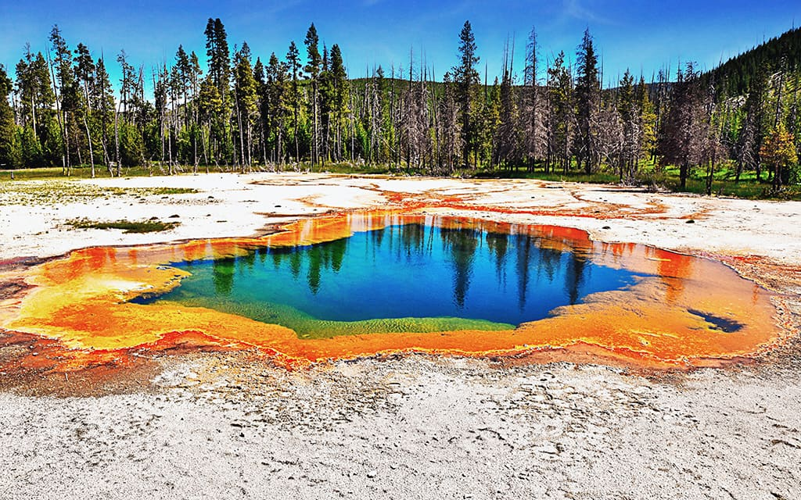

Yellowstoun
Amerika Birleşik Devletleri’nin ve dünyanın en önemli sit alanlarından biri kabul edilen Yellowstone Ulusal Parkı, her yıl milyonlarca yerli ve yabancı turist tarafından ziyaret ediliyor. ABD'ye gidenlerin vakit ve bütçe ayırıp mutlaka görmesi gereken yerler arasında olan park, her yıl yaklaşık olarak 4.3 milyon ziyaretçi ağırlıyor.
1 Mart 1872'de dönemin ABD Başkanı Ulysses S. Grant'ın imzasıyla ABD'nin ve dünyanın ilk ulusal parkı olma özelliğini kazanan Yellowstone Ulusal Parkı (Yellowstone National Park), Amerika Birleşik Devletleri'nin Idaho, Montana ve Wyoming eyaletlerinin kesiştiği noktada yer alıyor. Büyüklüğü yaklaşık olarak 8987 kilometre kare olan Yellowstone Ulusal Parkı'nın %96'sı Wyoming'de, %3'ü Montana'da ve %1'lik bir kısmı da Idaho eyaletinde bulunuyor.
Yellowstone Ulusal Parkı'nın içerisinde üç yüzden fazla gayzer (bunların en ünlüsü her doksan bir dakikada bir püsküren Old Faithful'dur), iki yüz doksandan fazla da irili ufaklı şelale var. Dünyadaki sıcak su kaynaklarının yarısı Yellowstone Ulusal Parkı'nda ve bu sıcak su kaynaklarının sayısı on bini aşıyor. ABD'nin en büyük, dünyanın ise en büyük üçüncü kaplıcası olan Grand Prismatic Spring de Yellowstone Ulusal Parkı'nda yer alıyor.Yalnızca yer altı kaynakları değil parkın ev sahipliği yaptığı canlı türleri de oldukça çeşitli. Kuşlar, balıklar, sürüngenler, memelerin yüzlerce türü Yellowstone Ulusal Park'ını yuva olarak benimsiyor. Parkta özellikle Kuzey Amerika Boz ayısı, bizon, antilop, çakal ve vaşaklar yoğunluğu ile göze çarpıyor. Yellowstone Ulusal Parkı bizon sürüsü, Amerika Birleşik Devletleri'ndeki en eski ve en büyük bizonu sürüsü.Maalesef parkta her yıl orman yangınları meydana geliyor. Özellikle 1988'deki büyük orman yangınlarında parkın yaklaşık üçte biri yandı. Parkta ayrıca bin yedi yüzden fazla ağaç ve diğer vasküler bitki türleri yer alıyor. Bunların dışında egzotik sayılan yüz yetmiş tür bitki çeşitleri de var.